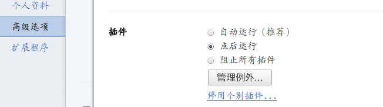
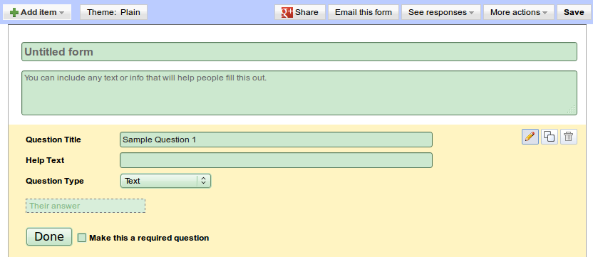

TODO list--忙完这一段之后要做的事情
好吧最近太废了... 主观原因是心不静, 懒惰拖延, 客观原因(理由)是毕设和法语...
仔细分析一下, 貌似目前还是要专心把毕设跟法语搞定. 但是我还是想在毕业前多做一点事情, 列一个清单, 等忙完这一阵就开始做一下这些事情:
- 写歌评
Eagles, Simon&Garfunkel, Brothers Four, 主要是这三个乐队的, 大概会有20首吧... 可能毕业前写不完, 但是一定要开始写, 我觉得关于某些歌我会有很多要写的.
- 写写我的毕设
可能我做的毕设没什么意思, 但是至少可以写写那些学到的matlab技巧.
- 写(所谓的)总结贴
一个是GT的一些经验总结, 一个是PT申请的一些经验总结. 这两件事大概就是我的2011的主线. 唉, 要是前者在2011年7月写掉, 后者在2011年12月写掉该多好!......
行了, 还是好好对付法语考试以及毕设论文去吧...
more ...打乱文本的行
今天cbl问了我一个问题: 怎样打乱一个文本文件的所有行??
仔细一想, 确实有难度... 因为那个文本文件居然有1G, 用python读进内存再打乱的思路估计不行啊... 那么awk, shell什么的有没有解决方法? 搜到了一些帖子, 但是稍微复杂一点的shell脚本我也看不懂(弱爆了)...
我甚至想大概vim会提供这个功能吧, 没想到在搜的时候居然搜到了一个现成的shell命令: shuf!!
$ shuf --help 用法： shuf [选项]... [文件] 或者: shuf -e [选项]... [参数]... 或者: shuf -i LO-HI [选项]... 把输入行按随机顺序输出到标准输出。 长选项必须使用的参数对于短选项时也是必需使用的。 -e, --echo 将每个参数视为输入行 -i, --input-range=LO-HI 将LO 到HI 的每个数字视为输入行 -n, --head-count=行数 ...
在bolg页面上加入ubuntu发布倒计时图标
明天ubuntu12.04LTS就要发布了! 然后今天下课回来在各种网站上闲逛, 突然发现了这个页面: 给网页添加ubuntu发布倒计时. 很厉害的样子, 介绍说只要把那一段代码加入网页的html文件就可以了. 我试了一下, 直接加在index.html上面--还真的可以唉~~
不过, pelican每次都是自动生成和更新index.html的啊, 难道每次都要手动加入这一行代码?? 难道还要自己修改pelican的代码??......
此时我想到了farseerfc学长的配置文件, 其中我把他的微博秀那几行注释掉了:
#~ SIDEBAR_CUSTOM = r""" #~ <li class="nav-header"><h4><i class="icon-list-alt"></i>Weibo</h4></li> #~ <iframe width="100%" height="550" class="share_self" frameborder="0" scrolling="no" #~ src="<http://widget.weibo.com/weiboshow/index ...
不用安装插件, 设置chrome点击播放flash
以前搜索怎么加速打开网页的速度, 有人会推荐flashblock插件. 安装之后, 所有的flash(视频也好, 广告也好)都不会自动播放, 只有自己去点击一下才会播放. 当时觉得这样挺好啊, 因为flash肯定占用了不少带宽以及cpu嘛~
后来, 发现cbl同学没有安装插件也实现了这样的效果, 如下图:

cbl教我把chrome设置成插件点击播放, 个人感觉这样挺有用的~ 大概是两步:
第一步, 扳手菜单-->首选项-->高级选项-->隐私设置-->内容设置

然后找到"插件"这一项, 选择"点后运行" 
这样设置之后, chrome就不会自动播放flash, 然后再设置点击运行flash.
第二步, 在地址栏输入:
OK, 到此为止, 就可以不装插件实现flashblock效果了~~
more ...使用google自定义搜索以及让google收录自己的网站
虽然我的blog点击人数可能还是个位数的, 我还是每天都想折腾一下它...
bootstrap2模板里提供了很丰富的内容(可以看farseerfc学长的页面), 其中的google站内搜索我觉得很有用, 于是也自己去弄了一下...
使用google自定义搜索
要登录google自定义搜索, 的页面, 用google帐号登录, 然后选择新建一个自定义搜索引擎, 会看到这样的界面:

第一项的名称和描述啥的随便填就行, 关键是第二项"要搜索的网站", 可以点击"了解详情"看一下应该怎么写. 比如我的网站是x-wei.github.com, 而且我想是在这个网站的所有子页面中搜索, 于是这里就填写: x-wei.github.com/*即可~ 第三项当然是免费版, 然后下一步.
下一步是一个测试, 可以在搜索框里尝试一下能不能得到想要的结果(我就是这里有问题的, 待会说). 如果没问题, 点击下一步, 下一步是给出了一段html代码, 把这些代码加入网页就可以添加google自定义搜索栏了(不过使用pelican写博客的话就不用这样了, 见后文).
嗯, 这个过程还是非常简单的吧!~
如何把自定义搜索栏加入pelican生成的页面
首先, 可能只能使用bootstrap2这个主题... 然后, 在settings.py ...
修改host去除优酷奇艺网站广告
优酷现在的广告已经是半分钟长了?? 所以屏蔽这些广告还是很有必要滴~
之前, 马阳同学给我一个修改host的方式, 用了几个月之后, 发现不好使了: 虽然不会显示广告, 但是不会直接跳过去, 而是显示"广告不能正常播放..." 然后还是要等待半分钟才能看...
后来, 看了奶牛的博客, 终于找到了解决办法, 至少到目前还是好使的~
第一步
首先, 添加屏蔽广告的host. 关于host的修改, 直接参考这篇博客, 把里面host的全部内容粘贴进对应的文件中.
第二步
然后, 按照奶牛的办法:
linux用户
找到: ~/.macromedia/Flash_Player/#SharedObjects/某某名字文件夹/ 这里, 可能会有两个文件夹: www.iqiyi.com以及static.youku.com, 删除之, 然后新建两个空白文件, 名字就取这两个文件夹的名字(要是没有这俩文件夹, 则直接新建这两个空白文件).
windows用户
和linux用户一样, 只是那个文件夹在:
(xp ...
修改host访问google的所有服务
google的服务(mail, doc, site, code, project...)很多都实在很方便(个人感觉QQ, 网易什么的和它绝对不是一个档次). 但是比较悲剧的是, google服务在国内不很稳定, 时不时上不去(比如gmail), 而有的服务(比如site)居然完全上不去...
自己的经验, 使用修改host的方式可以比较好的解决这个问题(而youtube啊, facebook啊什么的修改了不一定好使...) 这里贴一下..
其实就是修改一个文件...linux用户修改/ect/hosts, windows用户修改c:/windows/system32/drivers/etc/hosts.
2012-07-06更新
下面这些host不给力了, 新的host见我的日志
关于google的host, 网上到处都是, 比如这里, 不过我没有试过这里的host可不可以(应该可以吧...), 还是把我的host贴出来吧. 这里说一下, 我同时还加了去优酷广告(这里修改完了还要再处理一下), 上youtube(貌似有点问题). 把这些东西粘贴进hosts文件 ...
用pelican在github上创建自己的博客!
折腾了许久, 终于把我的博客搞得差不多了, 在此写一个总结, 以免自己以后忘了, 并且给和我一样菜的人提供一点参考....
先扯点别的
其实啊, 很早就想要建立自己的博客, 把值得分享的东西拿出来放到网上, 但是又不屑于使用网易, 百度等提供的现成服务, 技术又很菜... 于是一直拖着. zim的出现让我很欣喜--zim可以写类似于博客的东西(不过是给自己看的~), 记录有价值的内容. 但是怎么把我的一些总结放到网上?? 我先后考虑了这些东西:
googlesite-->wordpress-->jekyll+github-->pelican+github
googlesite是个很好的工具, 很容易上手(google好赞...), 我曾经用它做过一个个人页面. 但是这种傻瓜工具的缺点就是: 没法自己定制... 当我发现googlesite的bolg页面不支持标签云的时候, 就决定不用它了... 况且googlesite在国内需要修改一下host才能访问...
然后是wordpress, 这个似乎目前也是最流行的网页制作工具, 我看到了很多很多大牛小牛使用WP搭建的自己的网站, 而且都是自己的顶级域名, 看上去就灰常霸气~ 当我终于有空折腾, 兴冲冲地研究WP时, 却发现顶级域名注册都是要交钱的, 还要弄什么vpn...这... 大概不适合我...
在我纠结的时候, 请教了dofine ...
more ...Hello World!
建立起了我的github博客~!
作为一个很菜的低端桌面(ubuntu, gnome)用户, 这个还是相当不容易啊~~
本来考虑使用的是jekyll, 但是安装过程老是报错... 最终选择了pelican生成静态页面, 这个工具很好用, 只是目前关注度不足啊~ 关于pelican的介绍可以参考 这里 , jekyll我折腾了N久没有搞定, 而pelican很快就装好了~ 非常感谢 farseerfc 同学, 非常耐心地回答我这个菜鸟的问题... 不过还是自力更生比较好, 好好看它的 文档 吧~
另外, 我之前用 zim 写了一些笔记, 准备把值得分享的部分放到blog上来. zim0.56刚刚开始支持把笔记导出成markdown格式, 这实在是太棒啦!!
more ...使用google doc建立在线调查表!~
在线办公我以前试过zoho, 但是一个xls文件有多个人同时编辑时会有问题...
昨天收到学长关于春游的调查表, 居然是用google doc做的, 很给力. 我早就想做一个分布式通讯录, 所以研究了一下. 越来越感觉google提供的服务(google doc, google site, google project)太方便了!!!
建立
大概的流程是这样的: 用google帐号进入google doc, 然后点击creat->form, 会看到这样的页面:

嗯, 功能是比较简单但是够用! 点击add item 或者右边俩方框的按钮, 就可以添加问题了, 很easy, 我做的同学录是这个样子的:

然后还可以选择主题...
发布
编辑完成之后, 就可以发布了, 点击右上角的"Share"(有个g+的图标, 我一开始以为是像人人那样的分享呢...), 之后页面底部就会有一个链接~! 把这个链接发给别人, 别人就可以提交了~

btw, 如果不想发布, 只想发给几个人看的话, 点击share右边的那个"email this ...
more ...